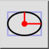
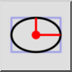
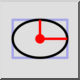
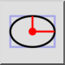

Ellipse avec rayons
Barre d'outil / icône :
 

Menu : Dessin > Ellipse > Ellipse avec rayons
Raccourci : E, I
Commandes : ellipseradii | ei
Ceci est une traduction automatique.
Barre d'outil / icône :
 

Menu : Dessin > Ellipse > Ellipse avec rayons
Raccourci : E, I
Commandes : ellipseradii | ei
Dessine des ellipses avec des rayons majeurs et mineurs donnés.